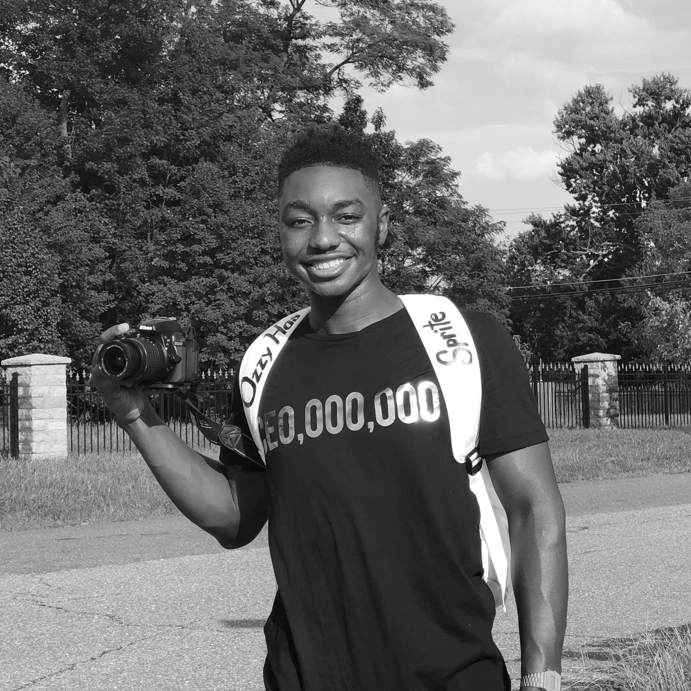

Hello, my name is Osbert Tufuor. The style of photography I have incorporates conceptual ideas and using natural colors to capture the realism of life. I take the idea of art imitating life to a different level, making my photographs look realistic while telling a story you want to read into. For example, one conceptual photoshoot I shot revolved around the Anniversary of the consumer electronic company Apple. I used myself as the subject of the photoshoot to dress up as Steve Jobs using various Apple devices which included the iPhone 7 and iPhone 7 plus models along with MacBooks. The videography services I provide are shooting music videos, commercials, and YouTube videos (editing is included). The photography services I provide are modeling portfolios, brand/business photography, taking pictures for weddings and birthdays, and any other photoshoot needs you may need. Send an email to goldentouchphotos@gmail.com for any business inquiries or questions.